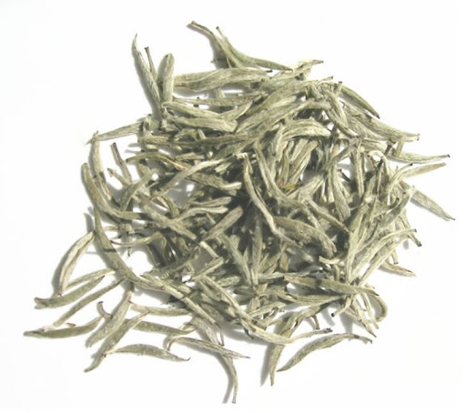

El té es la infusión de las hojas y brotes de la planta del té (Camellia sinensis). La popularidad de esta bebida es solamente sobrepasada por el agua. Su sabor es fresco, ligeramente amargo y astringente; este gusto es agradable para mucha gente.
El término «té herbal» se refiere comúnmente a infusiones de frutas o hierbas que no incluyen a la planta de té, tales como el mate, la manzanilla y la tilaentre otros.
El café es la bebida que se obtiene a partir de los granos tostados y molidos de los frutos de la planta del café (cafeto); es altamente estimulante por su contenido de cafeína, una sustancia psicoactiva. Este producto es uno de los más comercializados del mundo y una de las tres bebidas más consumidas del mundo (junto con el agua y el té). Suele tomarse durante el desayuno, después de éste o incluso como único desayuno, aunque también se suele tomar en la merienda, o después del almuerzo o cena para entablar conversaciones o solo por costumbre. Es una de las bebidas sin alcohol más socializadoras en muchos países. El gusto por el café no es espontáneo, sino que debe cultivarse, puesto que su sabor es fuerte y amargo.Café
Hebras
Té verde

Té negro

Té blanco
